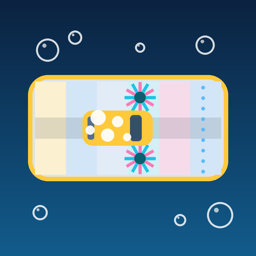

Tunnel Vision Privacy Policy
Effective November 11, 2026
Tunnel Vision: Car Wash Tycoon ("Tunnel Vision") is a game made by Blueprint Dev. This policy explains what happens to your information when you play.
The short version
Tunnel Vision does not collect, store, sell or share any personal information. There are no accounts, no ads, no analytics and no tracking.
Your game progress
Your companies, game slots and settings are saved only on your device. They are never sent to us or to anyone else. If you delete the app, this saved progress is deleted with it, unless it's included in your own iCloud or device backup.
In-app purchases
Purchases are handled entirely by Apple through the App Store. We never see or receive your name, Apple Account, payment details or billing address. Apple's privacy policy covers that information: apple.com/legal/privacy.
Third parties
The app contains no third-party advertising, analytics, crash-reporting or tracking software, and it makes no network connections of its own.
Children
Tunnel Vision is suitable for all ages. Because we don't collect personal information from anyone, we don't collect it from children under 13 either.
Changes to this policy
If this policy changes, the updated version will be posted on this page with a new effective date.
Contact
Questions about privacy? Email crodrig770@yahoo.com.